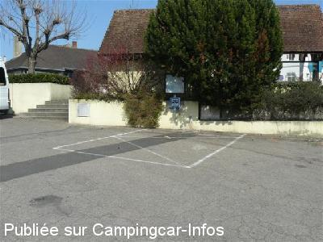
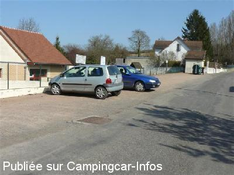
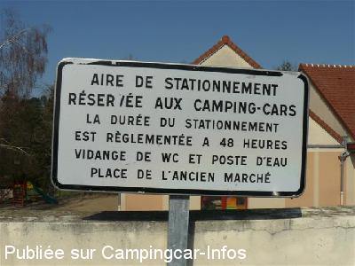

ASN = Aire de services avec stationnement nuit possible de :
BILLY
(N° 309)
Accès/adresse :
Rue de la Fontaine
03260 BILLY
03260 BILLY
Latitude : (Nord) 46.23598° Décimaux ou 46° 14′ 9′′
Longitude : (Est) 3.43055° Décimaux ou 3° 25′ 49′′
Tarif : Gratuit
Services :


Autres informations :
Prévoir raccord double mâle
Stationnement limité 48 h

Le 30/03/2012 par papy71170

Le 30/03/2012 par papy71170

Le 30/03/2012 par papy71170
de
oso
le 28/04/2013 :
je confirme il faut un raccord double mâle ( comme celui qui sert a relier les tuyaux)sinon pas d'eau, pour vider les eaux noires on peut ouvrir le regard et vider direct mieux que dans le PVC et on en fout pas partout.
je confirme il faut un raccord double mâle ( comme celui qui sert a relier les tuyaux)sinon pas d'eau, pour vider les eaux noires on peut ouvrir le regard et vider direct mieux que dans le PVC et on en fout pas partout.
de
José
le 23/08/2012 :
Bonjour,
De passage mi-août, je me suis arrêté pour les services, la vidange des eaux grises n'est pas très aisée, car soit on est en pente vers l'avant et il reste pas mal d'eau dans le réservoir, soit ont est sur le coté et la il y a les arbres et le mur, ça se fait quand même, le couvercle est lourd.
Pour l'eau il faut un raccord type "GARDENA" mais MALE, et il n'y a pas de robinet, c'est le raccord chromé qui fait office d'arrêt de l'eau, alors soyez vigilant lorsque vous insérez le raccord, que le tuyau soit au bout sinon gare au bain de pieds et il a de la pression...
Malgré tout, ces services sont GRATUITS, donc un grand MERCI à la commune.
Bonjour,
De passage mi-août, je me suis arrêté pour les services, la vidange des eaux grises n'est pas très aisée, car soit on est en pente vers l'avant et il reste pas mal d'eau dans le réservoir, soit ont est sur le coté et la il y a les arbres et le mur, ça se fait quand même, le couvercle est lourd.
Pour l'eau il faut un raccord type "GARDENA" mais MALE, et il n'y a pas de robinet, c'est le raccord chromé qui fait office d'arrêt de l'eau, alors soyez vigilant lorsque vous insérez le raccord, que le tuyau soit au bout sinon gare au bain de pieds et il a de la pression...
Malgré tout, ces services sont GRATUITS, donc un grand MERCI à la commune.
de
Charisma45
le 13/05/2012 :
Bonjour
Nous sommes passés fin avril 2012. A éviter pour les gros gabarits
Bonjour
Nous sommes passés fin avril 2012. A éviter pour les gros gabarits
de
papy 71170
le 30/03/2012 :
Le parking de la maternelle est le parking officiel de CC. Son inclinaison et la présence de véhicule stationné dessus, n'en font pas l'endroit idéal. Préférez les bords de l'Allier en dehors de la ville.
Le parking de la maternelle est le parking officiel de CC. Son inclinaison et la présence de véhicule stationné dessus, n'en font pas l'endroit idéal. Préférez les bords de l'Allier en dehors de la ville.
de
Patrice
le 30/03/2012 :
J'ai fait un passage le 26 mars 2012. La borne n'était pas encore en service. A noter des WC publics à proximité du point d'eau. Village sympathique et particulièrement l'épicerie et la boulangerie
J'ai fait un passage le 26 mars 2012. La borne n'était pas encore en service. A noter des WC publics à proximité du point d'eau. Village sympathique et particulièrement l'épicerie et la boulangerie
de
carpentieri
le 11/04/2010 :
Bonjour. Nous sommes passés, nous avons vu la marche populaire alors nous nous sommes arrêtés sur le parking de la maternelle et nous nous sommes inscris pour les 5 km. Nous en avons profité pour visiter le village, le petit château et ses alentours. A la fin, nous avons été chercher de l'eau sur la place du marché, gratis. Nous remerçions la commune.
Bonjour. Nous sommes passés, nous avons vu la marche populaire alors nous nous sommes arrêtés sur le parking de la maternelle et nous nous sommes inscris pour les 5 km. Nous en avons profité pour visiter le village, le petit château et ses alentours. A la fin, nous avons été chercher de l'eau sur la place du marché, gratis. Nous remerçions la commune.
de
rapido 03
le 21/02/2006 :
autre possibilitée de stationnement:prendre la route de marcenat(d130)et prendre le chemin à gauche entre le pont sous la ligne sncf et le pont sur la rivière; descendre aux étangs et stationner à l'écart au fond afin de ne pas gener les pecheurs .profitez en pour visiter le chateau fort et le village
autre possibilitée de stationnement:prendre la route de marcenat(d130)et prendre le chemin à gauche entre le pont sous la ligne sncf et le pont sur la rivière; descendre aux étangs et stationner à l'écart au fond afin de ne pas gener les pecheurs .profitez en pour visiter le chateau fort et le village